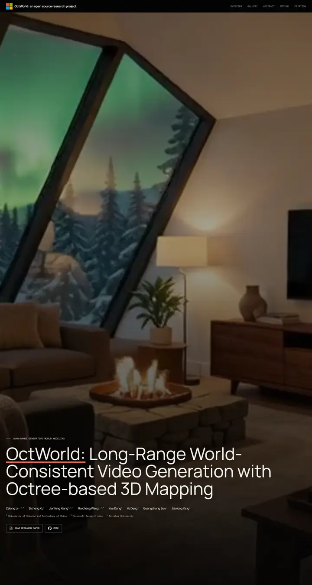

OctWorld: Long-Range World-Consistent Video Generation with Octree-Based 3D Mapping
一张黄昏时拍的杂志封面，满版影像，一行巨大的细 grotesk 标题压在底边，一条珊瑚色下划线像是落款。

已对照实际渲染的页面核对。
入选理由
满版图片主视觉，grotesk 标题固定在底部，红色下划线强调，等宽字体元信息。大胆的杂志封面风格，与其他页面都不一样。
下面的说明和 DESIGN.md 正文是英文。为了让编程 agent 读同一个版本，这部分没有翻译。
概述
配色
字体
Manrope
OctWorld: Long-Range World-Consistent Video Generation with Octree-Bas
Abstract · Method · Results · BibTeX — 0123456789
DM Mono
OctWorld: Long-Range World-Consistent Video Generation with Octree-Bas
Abstract · Method · Results · BibTeX — 0123456789
间距与形状
页面模块
使用建议
相似风格

CRAFT: Training-Free Cascaded Retrieval for Tabular QA
一本浅蓝晒图色的整洁产品手册，每个阶段都镶着自己的彩色边。

Efficient Self-Evaluation for Diffusion Language Models via Sequence Regeneration
一叠整齐的圆角卡片，浸在蓝、紫、杏色的晨光里，落款是一枚渐变字标。

FIGMA: Towards FIne-Grained Music retrievAl
一本印在暖色纸上的音乐期刊，红色引题下是厚重的 Newsreader 大标题，结果用大号红色衬线数字呈现，图片安放在柔和的奶油色框里。

GuideDog: A Real-World Egocentric Multimodal Dataset for Blind and Low-Vision Accessibility-Aware Guidance
一页安静的专著，单栏衬线排版，链接用牛血红墨水，表格只在自己那一行微微泛红。

LaMI: Augmenting Large Language Models via Late Multi-Image Fusion
一份用心的会议讲义，Noto Serif 标题、海军蓝描边按钮，柔和的灰色色带轮番出现。

PairCoder++: Pair Programming as a Universal Paradigm for Verified Code-Driven Multimodal and Structured-Artifact Generation
一张清爽的白色产品页，蓝色公告条、墨黑胶囊按钮，每张图都放在带柔和阴影的卡片上。